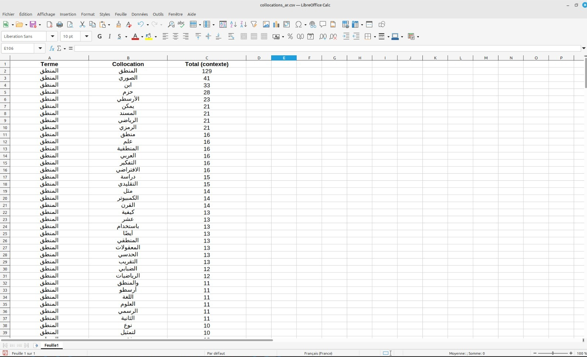

« المنطق هو العلم الذي يحدد القواعد التي يجب على العقل اتباعها للوصول إلى الحقيقة. »
— أرسطو ، أورغانو
منذ بدايات الفكر البشري ، فتن المنطق الفلاسفة والعلماء. أداة تحليلية ، أداة مقنعة أو إطار لهيكلة التفكير ، المنطق يعبر العصور والتخصصات ، من القياس المنطقي لأرسطو إلى منطق لايبنيز الرياضي ، حتى خوارزميات الذكاء الاصطناعي الحديثة. ولكن كيف يتجلى هذا المفهوم العالمي في لغات وثقافات مختلفة? تتناول هذه المقالة استخدام مصطلح "المنطق" في مجموعتين متناقضتين: العربية والفرنسية ، لاستكشاف استخداماته وسياقاته ودوره في التفكير البشري.
يتم سرد مصطلح" منطق ك وانعكاساته 157 مرة ، بشكل رئيسي في السياقات التالية :
على 685 مرّة كلمة منطق، و يحتل مصطلح "المنطق" مكانا مركزيا. بما إنه موجود في الكتابات الأكاديمية ، ولكن أيضا في المناقشات اليومية :
تكشف التعبيرات المرتبطة عن مواضيع مختلفة :
غالبا ما يتم دمج كلمة "منطق" مع مصطلحات محددة :
تظهر دراسة أحداث "المنطق" و "logique" أن هذا المفهوم متجذر في التقاليد الثقافية وقابل للتكيف مع التخصصات الجديدة. في المجاميع العربية ، يتم استخدامه لربط الأفكار الفلسفية والاجتماعية والتكنولوجية ، بينما في النصوص الفرنسية ، فإنه يبني التفكير الأكاديمي المعقد..
يظل المنطق بوابة عالمية لفهم العالم ، وربط اللغات والثقافات والتخصصات.
في عصر الذكاء الاصطناعي ، حيث تستند الخوارزميات إلى مبادئ منطقية ، من الأهمية بمكان استكشاف كيف يتناسب المنطق مع اللغات والسياقات الثقافية الأخرى. يمكن أن تقدم المقارنة مع المجاميع باللغة الإنجليزية أو الصينية أو اليابانية وجهات نظر رائعة. أخيرا ، سيسمح لنا ربط المنطق بعلم الأعصاب أو اللغويات الحاسوبية بتعميق فهمنا للطريقة التي يبني بها البشر تفكيرهم ولغتهم.
وهكذا ، يستمر المنطق ، كفن وعلم ، في إلقاء الضوء على مسارات الابتكار والتفكير النقدي.
لمعرفة المزيد ، استكشف تحليلاتنا اللغوية المتعمقة لكلمة "منطق" بلغات مختلفة.
تجد هنا التحليلات التفاعلية باستخدام أدوات فويانتولز:
